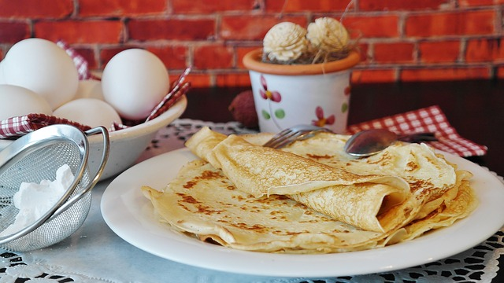

Perfect Pancakes

access_time
Prep: 5mins
Cook: 25mins
local_dining
Serves: 8 approx
Delicious and easy pancake batter recipe for every one in the family to enjoy!
Ingredients
- 100g plain flour
- 2 eggs
- 300ml milk
- 1 tbsp sunflower or vegatable oil, plus extra for frying
- pinch of salt
Method
- Put the Flour, milk, eggs and salt into a large mixing bowl
- Whisk until you have a smooth thick paste. Add a little more milk if the mix is too thick.
- Heat the pan over a moderate heat, and just before cooking wipe it with an oiled kitchen paper
- Ladle some of the batter into the pan, making sure to spread the batter thin and evenly across the pan.
- Leave the pancake to cook for 30 seconds before flipping to cook the other side for the same.
- Once cooked on both sides ease a palette knife under the pancake and quickly lift onto a warm plate.
- Continue to cook the rest of the batter in the same way.
- Decorate and add toppings to the pancake as you like.
- Enjoy!